From a Simple Request to a Full ROM Hack
In April 2025, I was approached by Pernille from the Danish community about a ROM hack they wanted to use for qualification for the upcoming event, DM i Tetris 2025.
At this point, I was already very familiar with ROM patching and had done quite a lot of projects. This one came at the perfect time because I had some time to do it, and it was the perfect reason for me to work on a bare-bones version of Tetris that could be used for future projects. So, it was a no-brainer for me to do it. As I heard a Tetris person say before: “Underpromise—overdeliver.” I agreed to have a look.
I immediately started coming up with tons of ideas to give it a very personal touch for the Danes and their event. A lot of blood, sweat, and tears went into the event, so I did not want to disappoint.
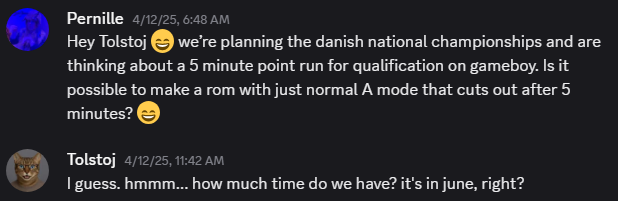
The first thing I did was draw the simplest game-state overview I could think of.
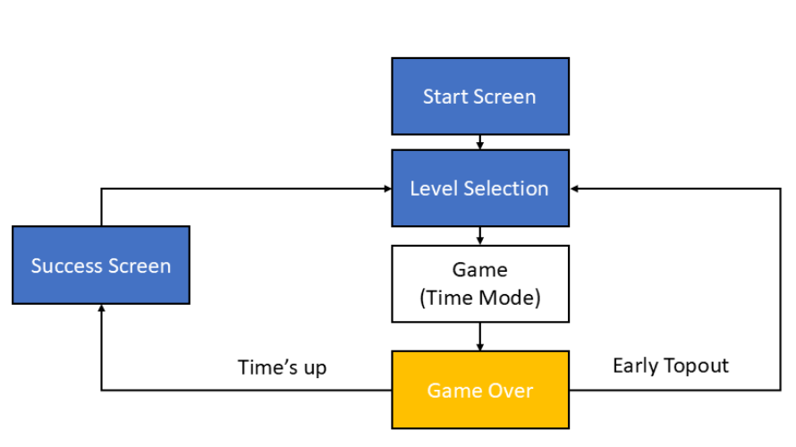
I lost no time starting the coding. A first functioning prototype was finished very quickly, but the work had only begun. Over the next few months, I crafted the project, optimized code, fixed bugs, improved things, and, most importantly, deleted unnecessary code from the codebase bit by bit. New ideas popped up, and the final 20% certainly took way more than 80% of the remaining time.
There were some insane bugs and thought experiments I came up with in order to solve certain issues.
This article is mostly based on a document I shared with the organizers. My idea was for them to be able to track progress and provide input. The beginning concerns some superficial descriptions, while the later part goes into depth—though not too far—about how I solved certain issues and what I actually did.
ROM Architecture and Scope
The game-state logic can be simplified as shown below. The blue arrows represent “init game states.” These are procedures that are not in a loop. Instead, they initialize everything necessary for the next “screen game state” once. The screen game states then loop on each frame until a trigger forces the next init state. This diagram is a simplification. A more detailed overview of all the game states can be found in the appendix.
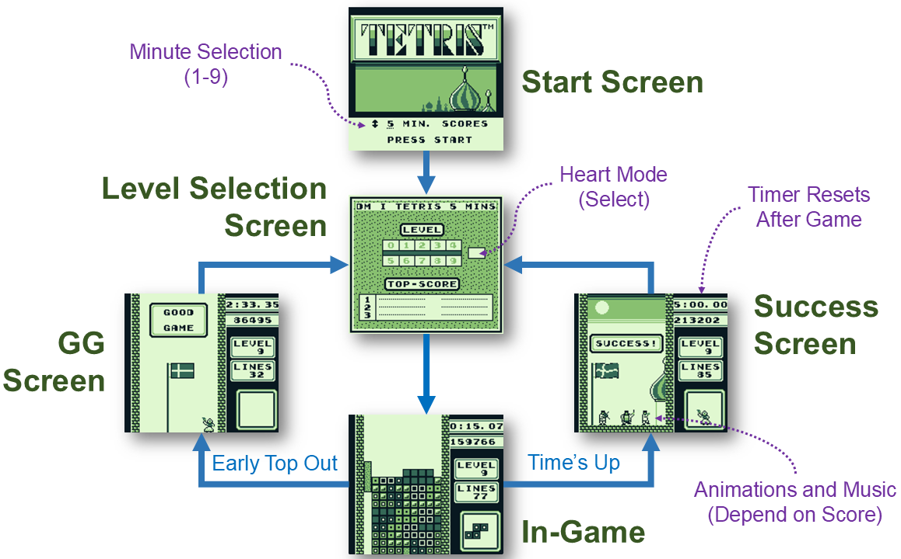
What Was Removed or Changed
Removed unnecessary code from the original ROM ✅
No legal screen ✅
No demos ✅
No sound-selection screen ✅
No B-Type ✅
No 2-Player ✅
No music—only sound effects ✅
No rockets ✅
No soft reset (A+B+Start+Select), because it could be used to change the timer ✅
Show the selected minutes on the A-Type screen ✅
Adjust the animation speeds ✅
Heart Mode toggle on the selection screen ✅
Reset the timer on the Success screen (idea by Toni) ✅
Maybe add a toggle for the kill screen or automatic top-out? ❌ Not necessary
Maybe add a time setting of zero for regular play? ❌ Not necessary
A Note About Multi-Frame Procedures
Note that certain procedures do not fit inside a single frame. It is therefore a good idea to repeat certain calls in a loop—not in the init state—with a check in place that makes sure the procedure is called only once. For example, a variable can start at $00 and become $01 once the procedure has been called successfully. The procedure can then be skipped by loading the variable into the accumulator. Using the compare command (CP) sets the flag register to a certain state (z = zero, nz = non-zero, c = carry, and nc = non-carry), which can then be used to jump conditionally (JR or JP) to an address after the relevant code.
Screens and Gameplay Changes
Start and Level-Selection Screens
The start screen no longer contains the 1-Player and 2-Player selection. It has custom graphics and a time selector for one to nine minutes, including a beep tone.
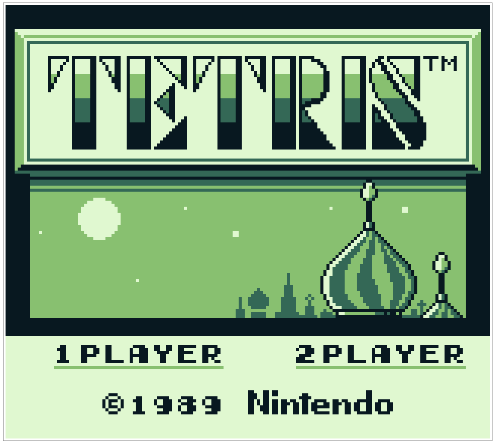
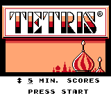
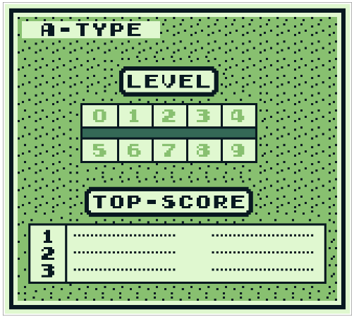
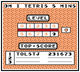
The separate top-three leaderboard for each starting level was replaced with a single joined leaderboard. Pressing B previously tried to access the now-missing music-selection screen; this was fixed. I considered adding a short delay before polling button presses to avoid accidentally skipping two menus, but this was not necessary.
In-Game Timer
The upper-right corner shows a timer in minutes:seconds.frames. The timer starts at x:00.00 and counts down, where x is a value from one to nine. During the last five seconds, there is an audible countdown beep. When 0:00.00 is reached, the game force-ends—or reaches the kill screen at M speed. Pausing is disabled, as is the Select button that normally toggles the next-piece display.
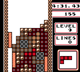
Game-Over Screens
If the selected minutes have passed, the game shows “SUCCESS!” Otherwise, it shows the “GG” screen. The flag uses a three-state animation, while the people use two-state animations. The next box always contains the waving woman. Higher scores add more performers:
- 50,000 or more: flute player on the right
- 100,000 or more: violinist on the left and the Danish national anthem
- 200,000 or more: drummer in the middle
The Danish national anthem plays when the timer reaches 0:00.00 and the score is at least 100,000. Each moving element has its own timer logic, which means its speed can be adjusted individually.
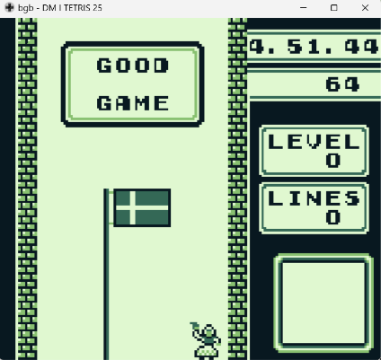
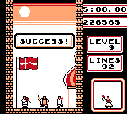
Bug 1: The Invisible Floor
This was a dirty and unexpected bug. Debugging it was hell.
The conditional end screens—“GG Screen” and “Success Screen”—are stored in binary files and read as follows:
GameScreenLayout_GG::
INCBIN "data/gameScreenLayout_GG.bin"
GameScreenLayout_Success::
INCBIN "data/gameScreenLayout_success.bin"They are then loaded in two steps. First, the tile set is loaded into WRAM, starting at address $C800. This is comparable to a waiting room. From here, manipulations such as adding or removing dancers and musicians are trivial.
; Load the Good Game screen into the WRAM screen buffer
ld hl, wGameScreenBuffer + 2
ld de, GameScreenLayout_GG
call CopyToGameScreenUntilByteReadEquFFhThenSetVramTransfer
call Clear_wOamThe “waiting room” is then loaded into the background map—Screen 0 in VRAM, starting at address $9800. This is done row by row in a loop from bottom to top, creating the curtain animation.
After loading a game-over screen—GG or Success—the game loads upcoming values without displaying them. The background map extends beyond the viewport of the displayed tiles, to the right and below. If any of the first few rows after a loaded game-over screen contain empty cells, they are not recognized as floor tiles in the next game. The problem is that these floor tiles are never displayed anywhere; only their values are stored. This was a nightmare to debug because the background map shows nothing below the playfield, and inserting tiles there before the game has no effect.
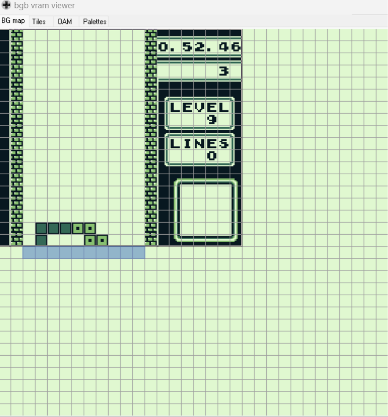
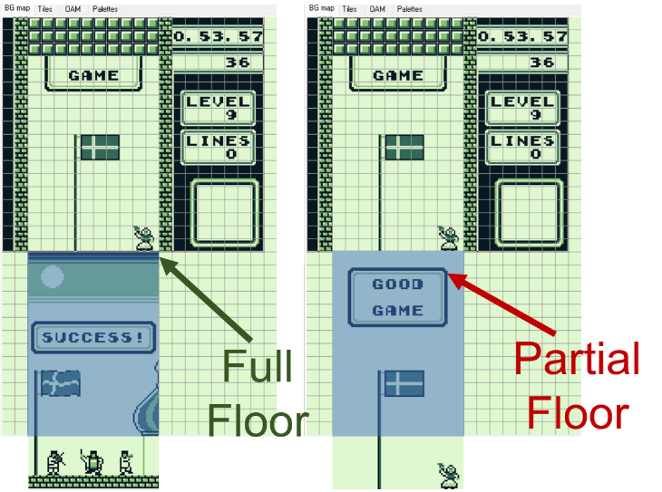
GameScreenLayout_GG contains empty cells in the first rows. These are then not floor tiles in the next game. Therefore, I had to make sure that the GG tiles were not loaded after the Success tiles.
How was I supposed to guess that by studying the invisible floor in the background map below the playfield? It makes you wonder how many times the original developers had no idea what was happening to the floor.
The proper solution would be to add a stop command ($FF), or to load at least one row of tile IDs other than $2F, the empty tile, after GameScreenLayout_GG:: and GameScreenLayout_Success::. The added floor row is a dirty solution.
; Any value except $2F (the empty tile) works here
db $28, $28, $28, $28, $28, $28, $28, $28, $28, $28
db $FF ; stop command$28 could be any value except $2F. I chose $28 because it corresponds to this tile.Bug 2: Ending the Game Safely
The game sometimes froze on the final frame of the timer at 0:00.00. This was surprisingly tricky to fix because there were many edge cases to consider. It took six iterations before I could play for an hour without any issues.
After the timer reaches 0:00.00, hTimerOn is set to $00. After that, the timer is no longer updated, and M speed should be triggered as soon as possible. However, there can be frames during which this must be postponed:
- A piece may be locking into the stack while
hPieceCollisionDetectedis set. - A line-clear animation may still be active while
hLineClearFrameis non-zero.
I set hGamOverTrigger to $01, which was supposed to make sure that M speed was assigned only once. Directly assigning level M requires two steps: setting the gravity (hNumFramesUntilPiecesMoveDown) to $00, meaning one drop per frame, and setting the gravity timer (hNumFramesUntilCurrPieceMovesDown) to $01, which triggers M speed on the next frame.
For some reason, there were rare cases in which M speed was still not assigned. I therefore check on every consecutive frame whether the gravity is M speed and reassign it if necessary. This is redundant, but it does the job, and I will probably leave it that way—never touch a running system.
Push-Down Speed After Time Expires
In addition, I changed the push-down speed to M speed when the timer has elapsed. Otherwise, pushing Down would slow the kill-screen speed.
; Push-down speed
ldh a, [hTimerOn]
cp $01
jr z, .kSpeed
ld a, $00 ; M speed
jr .skipKSpeed
.kSpeed:
ld a, $03 ; K speed
.skipKSpeed:
ldh [hTimer2], aBCD Countdown
The Game Boy is an 8-bit system and can therefore store 2^8, or 256, different values in each storage unit—for example, a value at an address in ROM, WRAM, or VRAM, or in the CPU registers a, b, c, d, e, h, and l.
Computer logic operates in binary, where one bit is either zero or one. For readability, four bits are combined into a single digit with 2^4, or 16, possible values. This requires more digits than the decimal system provides, so hexadecimal extends it with the letters A–F: 0, 1, 2, 3, 4, 5, 6, 7, 8, 9, A, B, C, D, E, F.
During an increment, the next digit is affected after reaching F; during a decrement, the previous digit is affected after reaching zero. Prefixes such as 0x or $ distinguish hexadecimal values, while 0b or % can identify binary values.
A byte can be displayed using two hexadecimal digits: a high nibble and a low nibble, ranging from $00 to $FF. One nibble consists of four bits, so $0 = %0000 and $F = %1111. The nibbles can be extracted by masking the other nibble with a bitwise AND using $0F or $F0. For the high nibble, the result is shifted by four bits; after masking, this is equivalent to a nibble SWAP.
A decimal timer must wrap after zero when decrementing or after nine when incrementing. The digits therefore need to behave as decimal values. BCD, or Binary-Coded Decimal, is a common way to achieve this. The stored nibbles never contain the hexadecimal-only values A, B, C, D, E, or F.
; Input: A = BCD value (for example, $10 = 10)
; Output: A = decremented BCD value
DecBCD:
ld b, a
and $0F
cp $00
ld a, b
jr nz, .notZeroLow
; Borrow from the high nibble
sub $10
add $09
ret
.notZeroLow:
sub $01
retMinutes, seconds, and frames are each stored at an HRAM address. Each consists of one byte—two nibbles—in BCD format. Seconds and frames range from zero to 59. At this point, minutes use only the lower nibble, from zero to nine. These values are set during game initialization in GameState0a_InGameInit, which is called before a game starts.
; Timer variables
hResetToMinutes:: db
hMinutes:: db
hSeconds:: db
hFrames:: db
; Initialize the timer before a game
ldh a, [hResetToMinutes]
ldh [hMinutes], a
xor a
ldh [hSeconds], a
ldh [hFrames], a
ldh [hInLastFiveSeconds], a
ldh [hFlagTimer], a
ldh [hLineClearFrame], a
ldh [hGamOverTrigger], a
inc a
ldh [hTimerOn], a
ldh [hFlagState], axor a is a commonly used instruction for setting register A, the accumulator, to $00. It replaces the less efficient ld a, $00. The same is true for inc a after register A contains $00, instead of the less efficient ld a, $01. hInLastFiveSeconds and hTimerOn are Boolean flags: $00 is false and $01 is true.
Line-Clear Protection
The countdown has to be called on each frame. The DMG Game Boy operates at approximately 59.7 FPS. In the code, one second is defined as 60 frames, which is accurate enough. This also adds fairness, since players receive an equal number of frames across platforms.
I added the countdown logic to InGameCheckButtonsPressed, the subroutine that checks for pressed buttons. It is conveniently called at the start of each frame.
Once the countdown was implemented and the game-over initialization was called, I realized that doing so during a line-clear animation—which takes almost two seconds—meant that the final line clear was not added to the score. I thought this was unacceptable. I also thought it would be a straightforward fix. Spoiler alert: it was not.
There were several pitfalls. During the time between a piece locking and the next piece spawning, the following series of events can be triggered:
- The current piece locks to the floor and
hPieceCollisionDetectedbecomes one. - The piece is transferred from OAM to the background map, and
hPieceCollisionDetectedbecomes zero. - Full rows are counted.
- Rows are deleted one by one, and the stack above is shifted down.
- The subroutine
.afterGameTypeNumLinesProcessingis called.
First, hLineClearFrame is set to “on”—a value from one to four, depending on the line clear—when the animation starts. It is set to “off,” or zero, after the line has been cleared.
.afterGameTypeNumLinesProcessing:
; Number of lines just completed is in B
ld a, b
ldh [hLineClearFrame], a
; ... line-clear work ...
.loop:
ld a, NOISE_TETRIS_ROWS_FELL
ld [wNoiseSoundToPlay], a
xor a
ldh [hLineClearFrame], a
retTimer and Forced-End Checks
; If the timer has expired, do not interrupt a locking piece
ldh a, [hTimerOn]
cp $00
jp nz, .skipCollisionCheck
ld a, [hPieceCollisionDetected]
cp $01
jp nc, .postponeGameOver
.skipCollisionCheck:
; Do not interrupt a line-clear animation
ldh a, [hLineClearFrame]
cp $01
jr nc, .skipTimerFinishedCheck
ldh a, [hTimerOn]
cp $00
jp z, .skipTimer
.skipTimerFinishedCheck:
; Frames
ldh a, [hFrames]
cp $00
jr nz, .decFrames
ld a, $59
ldh [hFrames], a
; Seconds
ldh a, [hSeconds]
cp $00
jr nz, .decSeconds
ld a, $59
ldh [hSeconds], a
; Minutes
ldh a, [hMinutes]
cp $00
jp z, .skipTimer
call DecBCD
ldh [hMinutes], a
jr .countingDone
.decSeconds:
call DecBCD
ldh [hSeconds], a
jr .countingDone
.decFrames:
call DecBCD
ldh [hFrames], a
.countingDone:
; Test all three components for zero
ldh a, [hMinutes]
cp $00
jr nz, .notTimeUp
ldh a, [hSeconds]
cp $00
jr nz, .notTimeUp
ldh a, [hFrames]
cp $00
jr nz, .notTimeUp
xor a
ldh [hTimerOn], a
.notTimeUp:
; Beep once per second during the last five seconds
ldh a, [hMinutes]
cp $00
jr nz, .notLastFive
ldh a, [hSeconds]
cp $06
jr nc, .notLastFive
ld a, $01
ldh [hInLastFiveSeconds], a
jr .checkFrames
.notLastFive:
xor a
ldh [hInLastFiveSeconds], a
jr .skipTimer
.checkFrames:
ldh a, [hFrames]
cp $00
jr nz, .skipTimer
ld a, SND_CONFIRM_OR_LETTER_TYPED
ld [wSquareSoundToPlay], a
.skipTimer:
; Wait until the timer is off and pending work is complete
ldh a, [hTimerOn]
cp $01
jr z, .postponeGameOver
ldh a, [hPieceCollisionDetected]
cp $01
jr nc, .postponeGameOver
ldh a, [hLineClearFrame]
cp $01
jr nc, .postponeGameOver
; Assign M speed once
ldh a, [hGamOverTrigger]
cp $01
jr z, .assignLevelMIfNot
xor a
ldh [hNumFramesUntilPiecesMoveDown], a
ldh [hButtonsHeld], a
inc a
ldh [hNumFramesUntilCurrPieceMovesDown], a
ldh [hGamOverTrigger], a
jr .postponeGameOver
.assignLevelMIfNot:
; Reapply M speed if another path changed it
ldh a, [hNumFramesUntilPiecesMoveDown]
cp $00
jr z, .postponeGameOver
xor a
ldh [hNumFramesUntilPiecesMoveDown], a
inc a
ldh [hNumFramesUntilCurrPieceMovesDown], a
xor a
ld [$9832], a
ld [$9833], a
.postponeGameOver:Why HRAM?
HRAM is a RAM region and presumably part of the CPU or system-on-chip architecture. Accessing it—for example, with ldh—is much faster than accessing WRAM. It uses fewer machine cycles and requires only eight-bit pointers, rather than the 16-bit pointers used by ld for regions such as WRAM, VRAM, and ROM. Using HRAM for variables that are accessed often, such as on every frame, is very efficient.
; Danish Championship variables
hTimerOn:: db
hLineClearFrame:: db
hGamOverTrigger:: db
hInLastFiveSeconds:: db
hFlagState:: db
hResetToMinutes:: db
hMinutes:: db
hSeconds:: db
hFrames:: db
hFlagTimer:: db
hWavingWomanTimer:: db
hViolinistTimer:: db
hDrummerTimer:: db
hFlutePlayerTimer:: dbGame-Over Layouts and Animation
Depending on whether the end of the timer has been reached, one of two screens is loaded: the static GG screen when the timer is above zero, or the animated Success screen when the timer is zero.
This is achieved by loading the screens from binary files into the RAM screen-buffer region at $C800 and onward, which acts like a waiting room. From there, the tiles are loaded row by row into the background map together with the curtain animation.
While these screens are in RAM, their tiles can be accessed individually. The Success screen contains animations, some of which depend on the player's score. At first, all static elements of the animated parts are loaded. Those that should not appear are then replaced with empty tiles ($2F). The animation procedure checks the upper-left tile of each potential object and decides what to do next based on the tile ID at that address.
The screens are loaded after GameState0d_GameOverScreenClearing is triggered. Before this is called, the game waits until the screen has been cleared and the game-over music has been loaded.
Note that the score is stored both in BCD and in little-endian format. Little-endian, in contrast to big-endian, stores bytes in reverse order. It is a very common way to store certain things in assembly and to iterate over bytes. A score of 123,456 is therefore stored as $56, $34, $12, starting at wScoreBCD.
ldh a, [hTimerOn]
cp $00
jr nz, .ggScreeen
; Load Success screen
ld hl, wGameScreenBuffer + 2
ld de, GameScreenLayout_Success
call CopyToGameScreenUntilByteReadEquFFhThenSetVramTransfer
call Clear_wOam
; Place the waving woman in the next box
ld a, $B9
ld [$99F0], a
inc a
ld [$99F1], a
inc a
ld [$9A10], a
inc a
ld [$9A11], a
; Read the most significant score byte
push hl
ld hl, wScoreBCD + 2
ld a, [hl]
pop hl
cp $20
jr nc, .skipGameOverScreens
cp $10
jr nc, .removeDrummer
cp $05
jr nc, .removeViolinist
.removeFlutePlayer:
ld a, $2F
ld [$99E9 + $3000], a
ld [$9A09 + $3000], a
.removeViolinist:
ld a, $2F
ld [$99E3 + $3000], a
ld [$99E4 + $3000], a
ld [$9A03 + $3000], a
ld [$9A04 + $3000], a
.removeDrummer:
ld a, $2F
ld [$99E6 + $3000], a
ld [$99E7 + $3000], a
ld [$9A06 + $3000], a
ld [$9A07 + $3000], a
jr .skipGameOverScreens
.ggScreeen:
ld hl, wGameScreenBuffer + 2
ld de, GameScreenLayout_GG
call CopyToGameScreenUntilByteReadEquFFhThenSetVramTransfer
call Clear_wOam
.skipGameOverScreens:Independent Animation Timers
A timer is defined for each moving element, giving each object maximum flexibility. All moving objects have two alternating states, except for the flag, which has three—fancy!
Once a timer reaches one of the values below, its object's state changes. The timer is updated on every frame, so each hexadecimal number defines how many frames the object remains in one state.
; Frames before the next animation state
FLAG_SPEED EQU $07
VIOLINIST_SPEED EQU $0E
FLUTEPLAYER_SPEED EQU $0F
DRUMMER_SPEED EQU $1C
WAVINGWOMAN_SPEED EQU $1E
; BCD score thresholds
FLUTEPLAYER_TRIGGER EQU $05 ; 50,000
VIOLINIST_TRIGGER EQU $10 ; 100,000
DRUMMER_TRIGGER EQU $20 ; 200,000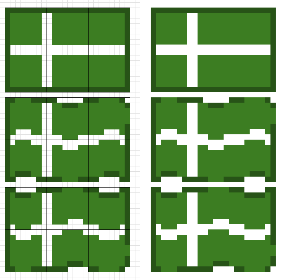
FLAG_SPEED.I will include only the flag animation here. The other animations are equivalent, except that they have only two states. Instead of adding performers, the code removes them from GameState0d_GameOverScreenClearing when the score is too low. The animations themselves are triggered in GameState04_LevelEndedMain.
; Only animate on the Success screen
ldh a, [hTimerOn]
cp $00
jp nz, .skipAnimations
; Wait for the flag timer
ldh a, [hFlagTimer]
cp FLAG_SPEED
jr z, .checkCurrentFlagState
inc a
ldh [hFlagTimer], a
jr .skipFlag
.checkCurrentFlagState:
ldh a, [hFlagState]
cp $02
jr z, .drawFlagStateTwo
cp $03
jr z, .drawFlagStateThree
.drawFlagStateOne:
inc a
ldh [hFlagState], a
ld a, $78
ld [$9923], a
inc a
ld [$9924], a
inc a
ld [$9925], a
ld a, $7E
ld [$9943], a
inc a
ld [$9944], a
ld a, $9A
ld [$9945], a
xor a
ldh [hFlagTimer], a
jr .skipFlag
.drawFlagStateTwo:
ldh a, [hFlagState]
inc a
ldh [hFlagState], a
ld a, $A4
ld [$9923], a
inc a
ld [$9924], a
inc a
ld [$9925], a
inc a
ld [$9943], a
ld a, $AE
ld [$9944], a
inc a
ld [$9945], a
xor a
ldh [hFlagTimer], a
jr .skipFlag
.drawFlagStateThree:
ld a, $01
ldh [hFlagState], a
ld a, $9E
ld [$9923], a
inc a
ld [$9924], a
inc a
ld [$9925], a
inc a
ld [$9943], a
inc a
ld [$9944], a
inc a
ld [$9945], a
xor a
ldh [hFlagTimer], a
.skipFlag:Adding the Danish National Anthem
In order to add music, I needed to make sure there was enough space in ROM and WRAM. The plan was to replace the existing sound engine with one that is often used for projects nowadays: the hUGE sound engine. Since this engine is fundamentally different from the native one, we could not expect any of the original music to keep working. Therefore, all music—excluding sound effects—had to be removed as well.
This left us with a large chunk of free space in ROM. Since we had removed a lot of material, we could replace certain static address assignments and make them dynamic, placing them without a gap after the preceding code.
; Before: fixed address in ROM bank 1
; SECTION "Sound Engine", ROMX[$6480], BANK[$1]
; After: linker-selected location
SECTION "Sound Engine", ROMX
INCLUDE "include/hUGE.inc"
INCLUDE "include/huGEdriver.s"This allowed me to include the new sound engine. The required files are available online, and the hUGE engine is about as simple as it gets. There are various DAWs—digital audio workstations—such as hUGE Tracker and the native GB Studio music editor, which can be used to write music for the Game Boy.
The engine also requires enough free WRAM addresses to store the current song. Because of several cleanups—mostly the unification of the leaderboard—we had more than enough RAM addresses available. I only had to remove entries that were no longer needed. Certain buffers could also be removed. This needed to be evaluated carefully to avoid conflicts caused by assigning the same RAM address twice.
Composing and Exporting the Anthem
I then used the GB Studio music editor to write the music. GB Studio does not allow the music files to be saved directly as .s or .asm files. Therefore, I used hUGE Tracker afterward to open the file from the previously saved GB Studio project folder: {YOUR GB STUDIO PROJECT FOLDER}\assets\music\.
The music files are stored as .uge files. These can be opened in hUGE Tracker and saved as .asm. I changed the extension to .s because that fits the existing project structure better, although either extension works equally well. I could then place the file alongside the project's code and include it with INCLUDE "code/danish_anthem.s".
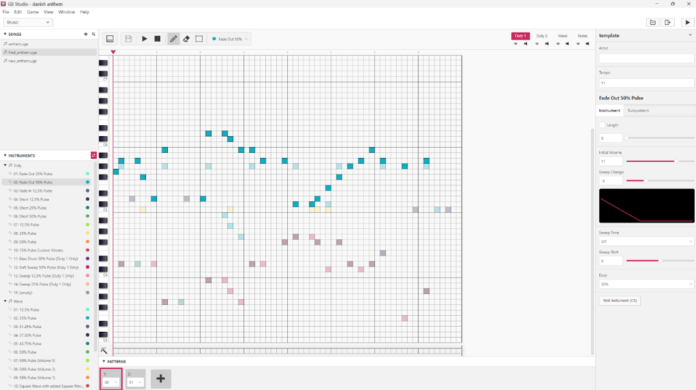
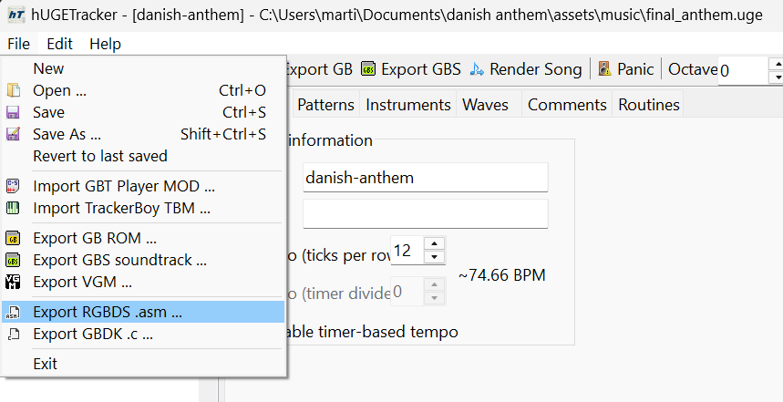
.uge file in hUGE Tracker and exporting assembly.When I tried to build the project, it warned me that some variables in this file were already defined. I added the prefix d_ to each of those variables and changed the references throughout the rest of the file. This was straightforward. I wonder whether there is a way to avoid this; I assume there must be. That is something to investigate for the next project.
SECTION "danish_anthem Song Data", ROMX
danish_anthem::
db 12
dw d_order_cnt
dw d_order1, d_order2, d_order3, d_order4
dw d_duty_instruments, d_wave_instruments, d_noise_instruments
dw d_routines
dw d_waves
d_order_cnt: db 4
d_order1: dw P0, P4
d_order2: dw P1, P5
d_order3: dw P2, P6
d_order4: dw P3, P7Initializing and Playing the Song
To use the music, the song data only needs to be initialized. This moves it into WRAM so it can be used afterward. The pointer in hl must be set to the beginning of the sound data, danish_anthem. I added this initialization to Gamestate_GameOverInit.
To play the music, the hUGE_dosound subroutine must be called on each frame. It plays one frame's worth of music and advances the pointer accordingly. That is almost all. I added it, together with the necessary conditions, to the very end of GameState_LevelEndedMain.
; Initialize the anthem
ld hl, danish_anthem
call hUGE_init
; Later, once per frame on the end screen
push hl
ld hl, wScoreBCD + 2
ld a, [hl]
pop hl
cp VIOLINIST_TRIGGER ; $10 = 100,000
jp c, .skipMusic
call hUGE_dosound
.skipMusic:It is also recommended to mute or re-enable the channels. I created the following subroutines and call them at various transitions. Muting the channels helps the battery last longer and prevents artifacts such as lingering tones.
; Turn on all sound channels
turnMusicOn:
push af
push bc
ld a, $FF
ldh [rNR51], a
ld c, $00 ; unmute
ld b, $00
call hUGE_mute_channel
inc b
call hUGE_mute_channel
inc b
call hUGE_mute_channel
inc b
call hUGE_mute_channel
inc b
call hUGE_mute_channel
pop bc
pop af
ret
; Turn off all sound channels
turnMusicOff:
push af
push bc
ld a, $00
ldh [rNR51], a
ld c, $01 ; mute
ld b, $00
call hUGE_mute_channel
inc b
call hUGE_mute_channel
inc b
call hUGE_mute_channel
inc b
call hUGE_mute_channel
inc b
call hUGE_mute_channel
pop bc
pop af
retThe anthem was recreated from this video, which uses only two tones at the same time—perfect for us.
The Game Boy has three tone channels: Duty 1, Duty 2, and Wave. I added the two tones to Duty 1 and Duty 2 and created a new bass line for the Wave channel. The fourth channel is the Noise channel, which is mostly used for percussion. I added percussion there and lowered its volume quite a bit to make it less invasive.
Conclusion and Acknowledgements
It was a fun project and will form the basis of many future projects!
Thanks to Toni, Pascal, and Anders for testing.
Appendix
Tools and Technical Background
The codebase for this project comes from Vinheim3’s Game Boy Tetris disassembly. The code may not always perform in the most efficient way, but it certainly does the job, and there is more than enough wiggle room during each frame. I prioritized human readability over efficiency. Programming was done using LR35902 assembly instructions in RGBDS syntax.
INCadds one to a value.DECsubtracts one from a value.- One byte contains eight bits and represents 256 possible values.
- Hexadecimal uses
0–9andA–F; prefixes such as$or0xdistinguish hex values from decimal values. - A byte contains a high nibble and a low nibble. Each nibble contains four bits.
- Masking with
$0For$F0isolates one nibble;swapexchanges the two.
During development, contributors were welcome to help with graphics, music, or sound effects. Game Boy graphics are tile-based, however, so conventional pixel art cannot simply be dropped into the ROM without preparation. A short introduction to the project’s tools and tile workflow would be necessary before contributing assets.
Remaining Game-State Jump Table
ProcessGameState:
ldh a, [hGameState]
rst JumpTable
dw GameState_InGameMain
dw GameState_GameOverInit
dw GameState_LevelEndedMain
dw GameState_TitleScreenInit
dw GameState_TitleScreenMain
dw GameState_InGameInit
dw GameState_GameOverScreenClearing
dw GameState_ATypeSelectionInit
dw GameState_ATypeSelectionMain
dw GameState_EnteringHighScore
dw GameState_TitleScreenInit ; duplicate (needed)
dw GameState_EnteringHighScore ; duplicate (needed)The precise reason for the two duplicate entries at the end was not investigated. They may relate to code paths that increment a game-state index into the jump table rather than selecting every state directly, especially because the end of a run can follow separate high-score and non-high-score routes.
Development Videos
- Final test run — 4 May 2025 (national anthem)
- Test run — 28 April 2025 (clean, lightweight, reusable codebase)
- Test run — 18 April 2025 (animations)
- Test run — 17 April 2025 (Success screen and trigger logic)
- Test run — 15 April 2025 (menu fixes)
- Test run — 14 April 2025 (timer and forced ending)
Testing Notes
- A five-minute game beginning at level 9 makes reaching the transition to level 10 quite difficult.
- The event required a sufficiently long testing phase, which was completed.
- Flashable cartridges were available if the organizers needed them.